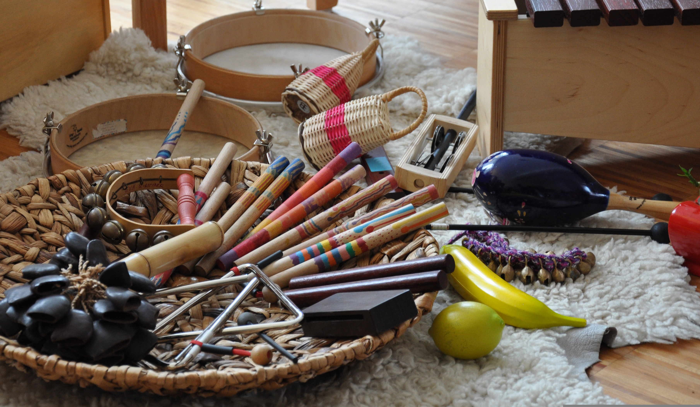

Giochi in musica

Grande musica per i più piccini
Musica - Laboratorio. Progetto educativo musicale per bambini della Scuola dell’Infanzia
La proposta didattica prevede le seguenti attività:
Incontro con gli insegnanti delle classi coinvolte
Laboratorio di Educazione Musicale ispirato alla “Music Learning Theory” di Edwin E. Gordon, rivolto ai bambini della Scuola dell’Infanzia
Danze popolari
Canto corale
Sperimentazione ritmica
Sperimentazione strumentale
Ascolta-tondo
Lezione aperta
L’inizio del laboratorio sarà preceduto da un incontro tra l’educatrice musicale e gli insegnanti affinché tutte le proposte didattiche (di seguito esposte) possano adeguarsi ai bisogni della classe e dei singoli bambini. In questo contesto didattico, per un’ottima riuscita del percorso, le differenze tra singoli devono essere valorizzate perché portano valore, idee, esercitano al problem solving, sono funzionali all’apprendimento tra pari.
MUSICA E INCLUSIONE
L’approccio del laboratorio seguirà come principio quello dell’inclusione, al quale la musica si sposa perfettamente. La pratica musicale, sia in quanto ascolto che produzione (entrambi inessenziali) propone l’uso di diverse intelligenze e abbraccia l’ambito cognitivo, emotivo e sociale promuovendo un apprendimento trasversale che possa fare da ponte per l’integrazione tra gli studenti e le loro diverse necessità.
Tra le numerose motivazioni possiamo dire che questo avviene sia perché la musica è un linguaggio che pur avendo una connotazione culturale specifica può superare le barriere linguistiche è può contribuire a costruire un contesto di gruppo accogliente, del quale ogni bambino possa sentirsi parte, sia perché in essa sono fondamentali l’espressione personale e la collaborazione, elementi chiave per sviluppare un ambiente scolastico inclusivo.
METODOLOGIA
Questo laboratorio è ispirato alla “Music Learning Theory” del prof. Edwin E. Gordon, ed ha come scopo principale quello di favorire nei bambini un processo di sviluppo di quelle competenze musicali che Gordon riunisce sotto il nome di “audiation”.
Ogni essere umano nasce con un attitudine musicale quindi con una capacità potenziale di imparare la musica e attivare dei processi che coinvolgono contemporaneamente corpo e mente e che ci portano a scoprire e a fare nostri i modi in cui i suoni si organizzano nel linguaggio espressivo della musica.
Questa scoperta si traduce nell’acquisizione di competenze quali l’intonazione e il senso ritmico e di ciò che genericamente viene definito “orecchio” ma che in realtà coincide con quelle competenze musicali informali che sono fondamentali e che permettono, a chi lo desideri, di avvicinarsi allo studio formale della musica in modo virtuoso e denso di significato.
L’uso del canto senza parole, del silenzio, del respiro e del movimento del corpo sono alcuni degli ingredienti essenziali delle proposte educative basate sulla MTL, che permettono all’educatore musicale di guidare i bambini in un processo che, dai primi mesi di vita li può accompagnare, in un’atmosfera di gioco, di scoperta e di crescita, fino all’età scolare e poi fino allo strumento musicale e al coro.
DANZE POPOLARI
Uno spazio speciale verrà dedicato alla pratica delle danze popolari in cerchio, danze provenienti da tutto il mondo che permetteranno ai bambini di lavorare su competenze motorie complesse, coordinazione, ascolto e osservazione alla massima potenza, comprensione della “forma” musicale e dell’organizzazione del fraseggio. Esse permetteranno inoltre ai piccoli di sperimentare un lavoro fortemente empatico e cooperativo con il gruppo di pari. Le danze popolari sono uno straordinario strumento di narrazione attraverso il corpo, raccontano storie collettive antiche e sempre vive e sono uno mezzo ideale di confronto tra le persone, dove trovano spazio l’educazione all’accoglienza, all’integrazione, al dialogo reciproco, all’apertura, al confronto, alla conoscenza della diversità come ricchezza.
ATTIVITA’ MUSICALI PROPOSTE DURANTE IL LABORATORIO:
CANTO
Elementi di alfabetizzazione musicale. Educazione della voce: * canti accompagnati da ostinati rimici e tonali * canti eseguiti a canone * polifonie elementari con accompagnamenti senza parole * polifonie con testo * polifonie con sovrapposizione di testi diversi
SPERIMENTAZIONE RITMICA
Codifica di sequenze ritmiche nate dal gruppo e dalle proposte dell’operatore.
“Body percussion” con esperimenti di “partiture semplici”, basate sulla memorizzazione dei gesti del “direttore” (a turno sarà un bambino o lo stesso docente), semplici partiture scritte con diversi codici di notazione simbolica.
SPERIMENTAZIONE STRUMENTALE
I bambini sperimenteranno l’uso degli xilofoni edi altri strumenti didattici, etnici o costruiti insieme.
L’ASCOLTATONDO
Momenti di puro e semplice ascolto in cerchio di musica di repertorio vario, fondamentalmente strumentale e appartenente ai più vari generi musicali, dalla musica classica al jazz, dal rock alla musica popolare.
LEZIONE APERTA
Il percorso del laboratorio si concluderà con una Lezione Aperta durante la quale i bambini potranno condividere con le proprie famiglie “il gioco della musica”.
DURATA
Il laboratorio ha una durata annuale ma è possibile concordare moduli di durata inferiore.
Monserrat Olavarria Balmaceda
cellulare: +39 342 371 1750